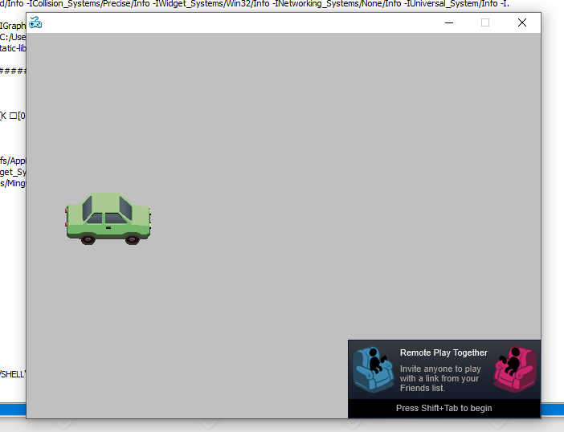

My accepted proposal Steam Workshop SDK/Third Party Integration For ENIGMA 🙌.
My acceptance story is not fun as my rejection story, because I have much experience with ENIGMA's codebase now which means my questions are more technical than general. The Steam project was Robert's idea
Would anybody be interested in working on steam integration?
R0bert — 02/02/2023 00:43
After long thought, I decided to work on the Steam Integration project. That was an interesting project by the way.
I started by looking at the official Steamworks documentation. Actually, it took me a while to understand how Valve wrote its documentation. I noticed the example game they provided for developers in order to understand more about the Steamworks API. I downloaded the game and started to play with it. Although I've got some errors, I managed to fix them immediately. I started to read the code and understand how it works. The code was split into two parts, the first part is the engine itself with some shading and rendering code. The second part is the APIs. I decided to start running a standalone program. I used CMake build system to link Steamworks library to my executable. It worked without any problem, so I started to write my proposal at this moment.
Something really happened that I didn't give much attention to. I was using MinGW GCC compiler
to build and run, and it worked fine. When I tried to get the current Steam ID
SteamUser()->GetSteamID() of currently logged-in user, I got nothing in VSCode
terminal. I thought that there must be something wrong with my code, so I ignored it.
Later on, while I am working on the project, I noticed that the same function and the same problem. Can you guess what was the problem?
I decided to write the starter code for the Steamworks extension. For ENIGMA, there are a bunch
of files that must be added in order for the extension to work correctly. About.ey,
which contains name and description of the extension. Makefile, which contains the
required codes for linking the extension to the executable. include.h, which
contains the header files for the extension. My mentors: fundies and rpjohnst helped me a lot
with it.
I decided to start linking Steamworks library to ENIGMA instead of writing a standalone program. I started to read about Makefile files and how to link libraries to ENIGMA. Actually, working on ENIGMA's build system was very beneficial for me.
oh you need to -L the directory for linking, not -I
and you probably want to put it in LDFLAGS?
rpjohnst — 08/03/2023 21:52
maybe?
Saif — 08/03/2023 21:52
it may work in cxxflags, I'm just not sure whether cxxflags gets passed to the linker command
and I'm also not sure whether ldflags exists, lol
I'm just going from memory
rpjohnst — 08/03/2023 21:53
the first directory works
override CXXFLAGS += -I$(ENIGMA_ROOT)/ENIGMAsystem/SHELL/Universal_System/Extensions/Steamworks \
this one works fine
it can find headers
Saif — 08/03/2023 21:53
right, but finding headers and finding libs are two different things that use different flags on different commands
rpjohnst — 08/03/2023 21:54
but dk what's the problem with those lib files
Saif — 08/03/2023 21:54
you've got -I (capital i) on the redistributable_bin directory
but it should be -L
rpjohnst — 08/03/2023 21:54
those capital and smaller stuff builds an error in my brain
Saif — 08/03/2023 21:56
lol yeah it's kind of arcane
rpjohnst — 08/03/2023 21:57
it's failed again
Saif — 08/03/2023 21:59
oh now you've still got the .lib there in -lsteam_api.lib
I think the two options are: - path_to/steam_api.lib - -Lpath_to/ ... -lsteam_api
rpjohnst — 08/03/2023 22:00
okay let me try
Saif — 08/03/2023 22:02
rip
probably you have a 32 bit steam_api and 64 bit game or vice versa?
rpjohnst — 08/03/2023 22:07
it's working with cmake
give me a sec
Saif — 08/03/2023 22:08
oh is there a steam_api64?
rpjohnst — 08/03/2023 22:09
yeah
but the steam_api.lib works perfectly with that cmake file
Saif — 08/03/2023 22:09
it's possible your cmake build is using a 32-bit compiler
rpjohnst — 08/03/2023 22:09
i tried to look at the Makefile generated but nothing
Saif — 08/03/2023 22:09
it might fail the same way if it were using a 64-bit compiler
rpjohnst — 08/03/2023 22:09
maybe?
i won't believe it if works
i ill try
@rpjohnst tell me when u want to give up
Saif — 08/03/2023 22:10
well again you have to leave out the .lib extension
we're making progress here- once you got the -L/-l split working properly we got a new error message about the 32/64-bit mismatch
rpjohnst — 08/03/2023 22:15
it's working now actually, thank u
Saif — 08/03/2023 22:16
nice
rpjohnst — 08/03/2023 22:16
That's my first progress in the Steam API integration project 🙌. I managed to link the Steamworks library to ENIGMA. The Steamworks Overlay can now be accessed from my empty project by pressing Shift + Tab.
@R0bert @gfundies we r making progress here

Saif — 08/03/2023 22:27
Remember Dhruv and Kartik? They were applying for GSoC '22 with me. Remember when I said they helped me a lot? Well, they helped me a lot in GSoC '23 too. Dhruv helped me with the proposal, he also gave me his credentials for GMS as I couldn't sign up due to something with YOYO Games server. Kartik reviewed my proposal like 100 times, I really can't forget their help so I decided to mention them here.
I submitted two PRs before getting accepted, #2335, #2337, and another two after getting accepted, #2341, #2340.
On 04/05/2023, I received the acceptance email from Google. Actually, what makes this special is that as claimed by Stephanie Taylor:
This is the most competitive year we have ever had for GSoC.
Stephanie Taylor - GSoC Program Lead at Google
Let's leave schoolwork aside for now because it seems that it is gonna be a busy summer 😎.
وَمَا بِكُم مِّن نِّعْمَةٍۢ فَمِنَ ٱللَّهِ ۖ ثُمَّ إِذَا مَسَّكُمُ ٱلضُّرُّ فَإِلَيْهِ تَجْـَٔرُونَ
Whatever blessings you have are from Allah. Then whenever hardship touches you, to Him ˹alone˺ you cry ˹for help˺.
The Noble Qur'an, An-Nahl 53